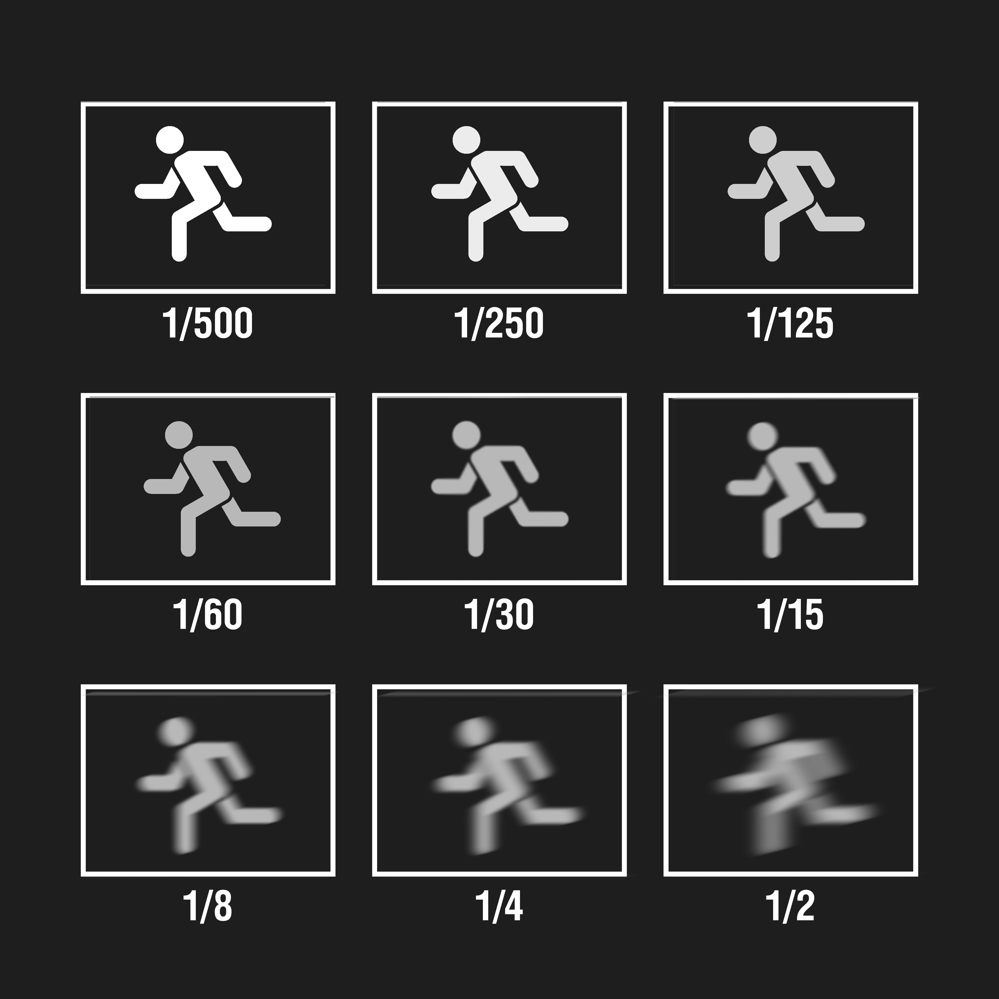

Basic Camera Settings
Did you recently purchase a new camera but are not sure which camera settings to use? You’re not alone. Most beginner photographers are initially overwhelmed by the endless buttons and menu functions on their DSLR cameras. This beginner’s guide to basic camera settings will help you understand how to operate your camera and adjust it to the way you want it. Being able to capture great visuals requires a little bit of an introduction to the three most basic camera settings: Aperture, ISO, and Shutter Speed. The combination of these three functions is present in most cameras and is imperative to operating your camera.
Camera Settings Everyone Should Know
The extra features and camera modes vary from camera to camera, but we will go over the most common camera modes in digital cameras. Knowing all of these basic camera settings and modes is the key to unlocking your camera’s fullest potential and capabilities.
What is Shutter Speed?
One of the three most important settings in photography is Shutter Speed, the other two being Aperture and ISO. Shutter speed is responsible for two particular things: changing the brightness of your photo and creating dramatic effects by either freezing action or blurring motion. In the following article, we will explain everything you need to know about it in very simple language.
Shutter speed exists because of the camera shutter – which is a curtain in front of the camera sensor that stays closed until the camera fires. When the camera fires, the shutter opens and fully exposes the camera sensor to the light that has passed through your lens. After the sensor is done collecting the light, the shutter closes immediately, stopping the light from hitting the sensor. The button that fires the camera is also called “shutter” or “shutter button,” because it triggers the shutter to open and close.
Shutter speed is the length of time the camera shutter is open, exposing light onto the camera sensor. Essentially, it’s how long your camera spends taking a photo. This has a few important effects on how your images will appear.
When you use a long shutter speed (also known as a “slow” shutter speed), you end up exposing your sensor for a significant period of time. The first big effect of it is motion blur. If your shutter speed is long, moving subjects in your photo will appear blurred along the direction of motion. This effect is used quite often in advertisements of cars and motorbikes, where a sense of speed and motion is communicated to the viewer by intentionally blurring the moving wheels.
On the other hand, shutter speed can also be used to do just the opposite – freeze motion. If you use an especially fast shutter speed, you can eliminate motion even from fast-moving objects, like birds in flight, or cars driving past. If you use a fast shutter speed while taking pictures of water, each droplet will hang in the air completely sharp, which might not even be visible to our own eyes.
- How Shutter Speed is Measured?
- Shutter Speed and Exposure
- How to Set Shutter Speed?
- By setting the camera to “Shutter Priority” mode, you choose the shutter speed, and the camera automatically selects the aperture.
- By setting the camera to “Manual” mode, you choose both shutter speed and aperture manually.
- How to Find Shutter Speed?

Shutter speeds are typically measured in fractions of a second when they are under a second. For example, 1/4 means a quarter of a second, while 1/250 means one-two-hundred-and-fiftieth of a second (or four milliseconds). Most modern DSLRs and mirrorless cameras can handle shutter speeds of 1/4000th of a second at the fastest, while some can handle even quicker speeds of 1/8000th of a second and faster. On the other hand, the longest available shutter speed on most DSLRs or mirrorless cameras is typically 30 seconds. You can use a longer shutter speed by using external remote triggers, if necessary.
The other important effect of shutter speed is on exposure, which relates to the brightness of an image. If you use a long shutter speed, your camera sensor gathers a lot of light, and the resulting photo will be quite bright. By using a quick shutter speed, your camera sensor is only exposed to a small fraction of light, resulting in a darker photo. However, shutter speed is not the only variable that affects the brightness of an image. There are also aperture and ISO, along with the actual brightness of the scene in front of you. So, you have some flexibility when you’re deciding on a shutter speed, but you need to pick your other settings carefully.
Most cameras handle shutter speeds automatically by default. When the camera is set to “Auto” mode, the shutter speed is selected by the camera without your input (and so are aperture and ISO). However, you can still set the shutter speed manually if necessary:
Do you know how to find what your camera shutter speed is set to? It is typically very easy to find it. On cameras that have a top panel, the shutter speed is typically located on the top left corner.If your camera does not have a top LCD, like some entry-level DSLRs, you can look through the viewfinder, where you will see the shutter speed on the bottom-left side. And if your camera has neither a top LCD nor a viewfinder, like many mirrorless cameras, you can see your shutter speed simply by looking on the back screen.On most cameras, the shutter speed will not show up directly as a fraction of a second – it will typically be a regular number. When the shutter speed is longer than or equal to one second, you will see something like 1” or 5” (with the quotation sign to indicate a full second).
If you still cannot find the shutter speed, set your camera to “Aperture Priority” mode, and make sure that you have turned “AUTO ISO” off. Then, start pointing around your camera from dark to bright areas. The number that changes will be your shutter speed.
What is Aperture?
Let’s start with one of the three main settings of exposure–the aperture setting. Understanding how aperture works will not only help you control your camera better but it will also give you more creative freedom when taking photos. It is an easy concept to understand if you just think about how your eyes work. As you move between bright and dark environments, the iris in your eyes either expands or shrinks, controlling the size of your pupil. Have you ever noticed how some photos have a blurrier background than others? The “bokeh” you see in the photos is controlled by the aperture or the opening in your camera’s lens.
This opening can range from f/1.4–f/29 and is measured in f-stops. When you press the shutter button, the shutter opens and allows light to enter the camera’s sensor. How you can control the amount of light entering the hole is by changing the f-stop, or the aperture. With that in mind, the smaller the aperture or hole, the less light you’re getting. The bigger the aperture, the more light is coming through the sensor. Here comes the tricky part. The opening of the hole is measured in f-stops. However, it’s important to keep in mind that the smaller the number of f-stops, the wider the aperture gets. An f-stop of f/1.4 means that the aperture hole is completely wide open, allowing maximum light to enter your camera sensor. On the other hand, an f-stop of f/22 means the hole is much smaller, with a lot less light entering the sensor.
So what does this mean? Aperture is a powerful setting that allows you to easily manipulate light in your photos. You can brighten up your photos by opening your aperture (smaller f-stop) or minimizing light entering the sensor by increasing your f-stop. This is very popular for portrait photography. At the other extreme, it will give you sharp photos from the nearby foreground to the distant horizon. Landscape photographers use this effect a lot.
- How Aperture Affects Exposure
- How Aperture Affects Depth of Field
- Large vs Small Aperture
- How to Pick the Right Aperture
- Ask myself how much depth of field I want
- Set an aperture that achieves it
- Set a shutter speed that makes my photo the proper brightness
- If that shutter speed leads to unsharp photos thanks to too much motion blur, dial back the shutter speed and raise my ISO instead
- Win photo contest :)
- Setting Aperture in Your Camera
Aperture has several effects on your photographs. Perhaps the most obvious is the brightness, or exposure, of your images. As aperture changes in size, it alters the overall amount of light that reaches your camera sensor – and therefore the brightness of your image. A large aperture (a wide opening) will pass a lot of light, resulting in a brighter photograph. A small aperture does just the opposite, making a photo darker.
The other critical effect of aperture is depth of field. Depth of field is the amount of your photograph that appears sharp from front to back. Some images have a “thin” or “shallow” depth of field, where the background is completely out of focus. Other images have a “large” or “high” depth of field, where both the foreground and background are sharp. One trick to remember this relationship: a large aperture results in a large amount of both foreground and background blur. This is often desirable for portraits, or general photos of objects where you want to isolate the subject. Sometimes you can frame your subject with foreground objects, which will also look blurred relative to the subject. As shown in the example below:

On the other hand, a small aperture results in a small amount of background blur, which is typically ideal for some types of photography such as landscape and architecture.
one important part of aperture that confuses beginning photographers more than anything else. This is something you really need to pay attention to and get correct: Small numbers represent large apertures, and large numbers represent small apertures! That’s not a typo. For example, f/2.8 is larger than f/4 and much larger than f/11. Most people find this awkward, since it goes against our basic intuition. Nevertheless, this is a fact of photography.
This causes a huge amount of confusion among photographers, because it’s completely the reverse of what you would expect at first. However, there is a reasonable and simple explanation that should make it much clearer to you: Aperture is a fraction. So, if photographers recommend a large aperture for a particular type of photography, they’re telling you to use something like f/1.4, f/2, or f/2.8. And if they suggest a small aperture for one of your photos, they’re recommending that you use something like f/8, f/11, or f/16.
Now that you’re familiar with large vs small apertures, how do you know what aperture to use for your photos? Let’s revisit two of the most important effects of aperture: exposure and depth of field. In a darker environment, where you aren’t capturing enough light, the optimal aperture would change. For example, you may want to use a large aperture like f/2.8 at night, just like how our eye’s pupils dilate to capture every last bit of light. As for depth of field, recall that a large aperture value like f/2.8 will result in a large amount of background blur, while values like f/8, f/11, or f/16 will give you a lot more depth of field.
In fact, depth of field is the part of aperture that I recommend thinking about the most. My process for almost every photo I take goes like this:
If you haven’t guessed it already, we highly recommend selecting your aperture manually as a photographer. If you allow the camera to set it automatically, you are likely to end up with the completely wrong depth of field in your image.
There are two modes in photography which allow you to select the aperture manually. These are aperture-priority mode and manual mode. Aperture-priority mode is written as “A” or “Av” on most cameras, while manual is written as “M.” Usually, you can find these on the top dial of your camera.
In aperture-priority mode, you select the desired aperture, and the camera automatically selects your shutter speed. Aperture priority mode is great for everyday photography, where you rarely need to worry about any camera settings other than aperture. In manual mode, you select both aperture and shutter speed manually.Manual mode takes more time and usually gives you the same results as aperture priority anyway. It’s only needed in special situations where you need a consistent exposure from shot to shot, or when the camera’s meter is messing up.
What is ISO?
In very basic terms, ISO is simply a camera setting that will brighten or darken a photo. As you increase your ISO number, your photos will grow progressively brighter. For that reason, ISO can help you capture images in darker environments, or be more flexible about your aperture and shutter speed settings. However, raising your ISO has consequences. A photo taken at too high of an ISO will show a lot of grain, also known as noise, and might not be usable. So, brightening a photo via ISO is always a trade-off. You should only raise your ISO when you are unable to brighten the photo via shutter speed or aperture instead.
- What is the Meaning of ISO?
- Common ISO Values
- ISO 100 (low ISO)
- ISO 200
- ISO 400
- ISO 800
- ISO 1600
- ISO 3200
- ISO 6400 (high ISO)
- How to Change ISO?
- To start, enter a mode that lets you select the ISO yourself. Get out of Auto mode, and go to Manual (Or any other mode you prefer. You can find out more about camera modes in Lesson 7).
- For entry-level DSLRs and mirrorless cameras, you probably need to open a menu (possibly the “quick menu”) and find the section for ISO. Select the value you want, or set it to Auto.
- For higher-end cameras, there may be a dedicated “ISO” button on the camera. Press it while spinning one of the wheels to change your ISO setting. If you don’t see a button labeled “ISO”, it is still possible that your camera will let you program one to perform this task.
- Other cameras may have a dedicated wheel that already has various ISO settings marked. This makes things even easier.
- What Camera ISO Should You Use?
The acronym ISO stands for “International Organization for Standardization”. However, camera ISO does not directly refer to the organization that creates various technology and product standards. Ever since two film standards called ASA and DIN were combined into ISO standards in 1974, they were referred to as one word “ISO” from that point on.
Every camera has a different range of ISO values (sometimes called ISO speeds) that you can use. A common set is as follows:
Quite simply, when you double your ISO speed, you are doubling the brightness of the photo. So, a photo at ISO 400 will be twice brighter than ISO 200, which will be twice brighter than ISO 100.
Changing ISO varies from camera to camera. Here are some common ways to change ISO:
Many photographers understand the basics of ISO, but they aren’t sure which ISO value to actually pick in the field. In practice, there’s a reason why your camera allows such a wide range of ISO settings: Different situations call for different ISOs. Below, we will cover some of the common scenarios you may come across.
What is Auto Mode?
Most digital cameras nowadays will have Auto Mode where the camera will control every aspect of the photograph, including the aperture, focus, shutter speed, and more. The photographer won’t be able to control the settings much in this setting. In many circumstances, using Auto Mode is a very quick and easy option. Beginners will gravitate toward Auto Mode to get a feel for the camera without worrying too much about the controls. While this is perfectly normal, it may limit you from using the camera’s fullest capabilities.
It’s recommended that you use Auto Mode when the lighting is ideal so the camera can detect the proper settings and exposure automatically. In many cases, the Auto Mode gets the job done, producing high-quality photos when the lighting and settings are balanced. This is especially useful when you’re in a hurry and don’t have time to change specific settings. Most modern cameras do a very good job in Auto Mode.
What is Manual Mode?
In contrast, Manual Mode allows you to take full creative control of your camera and photos. Once you are comfortable with adjusting aperture, ISO, and shutter speed, using Manual Mode is an excellent way to improve your photography skills and allows you to shoot beautiful and controlled portraits and sceneries. Using Manual Mode requires you to specify each setting, which can come in handy when the lighting isn’t ideal or if you are capturing images for artistic reasons. Some of the most experienced photographers shoot in Manual Mode for the reason that they can take full creative control. You can easily achieve creamy bokeh in your background by manually adjusting your aperture, or create stunning images of star trails with a long shutter speed.
The general rule of thumb is that if you have enough time to adjust the controls manually, then shoot in manual. If not, it’s recommended you stick with other modes such as Aperture or Shutter Speed Priority.